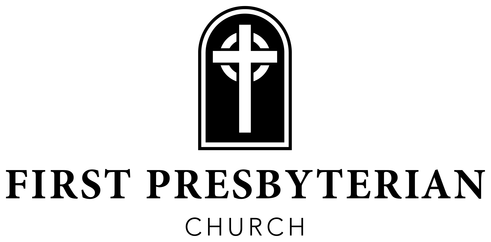

The flowers adorning the sanctuary today are given in honor of Ms. Jenny Biggers, Ms. Betty Knight, and Dave and Becky Shanklin for loving our kids and always praying for them. Holland & Caitlin Yeates
37th Community Thanksgiving Meal. Join us on Thanksgiving morning, Thursday, November 26, as we prepare and deliver 750 Thanksgiving meals to those who need them throughout Alcorn County. This is a HUGE project and can only be accomplished with the help of many. It is a great opportunity for the members of FPC to be disciples by “living and loving like Jesus.” You can help with meal prep or by delivering meals. Please fill out the insert to volunteer your time and place it in the offering plate, or drop it by the church office.
Altar Flowers. We have two openings for altar flowers in December: Sunday, December 6, and Sunday, December 13. If you’d like to provide altar flowers for those dates, please contact Teresa in the church office.
Assisting Elder — Dr. Marz Mazurkiewicz
Greeters — Hunter & Anna McCalla
Acolytes — Madelyn Butler & Kathryn Moore
Circle of Prayer — Malechi Doren & Alberto Albarracin
Children’s Church — Virginia Boyd James
AV Engineer — Russell Smith
Ushers — Scott Sawyer, Holland Yeates, Ben Long, & Josh McCahill
Nursery — Deborah Kiddy, Jennifer Sexton, Sarah Bynum, Deb Parker, & Kyle & Meghan Holcombe
Rev. Waring Porter - Pastor
Gregg Parker - Dir. of Discipleship
Bobby Capps - Dir. of Outreach & Care
Jennifer Shipp - Dir. of Student Ministries
Laura Kate Carmichiel - Dir. of Women’s Min. & Comm.
Phyllis Sellers - Day School Director
Jan Pike - Choir Director
Malechi Doren - Accompanist
Teresa Tsagarakis - Administrative Assistant
Sammy Allred - Bookkeeper
November 8 Deacons’ Meeting
November 11 Kids Quest · Youth House · Messy Bible Study, 6 p.m. · Kids Quest Family Gathering, 5pm
November 12 Women's Ministry Book Club
November 18 Messy Bible Study Dinner, 6pm
November 26 37th Community Thanksgiving Meal
Scan to give online
919 East Shiloh Rd · Corinth, MS 38834 · fpccorinth.org · 662-286-6638

November 8, 2026
Twenty-fourth Sunday after Pentecost
“To be disciples, to make disciples”
We are honored that you decided to join us this morning. Whether it is your first time in church, your first time in a long while, or part of your regular rhythm, we hope you will be encouraged by the fellowship with each other, and with our Lord, as we worship him together.
If this is your first time with us, please take a moment and fill out a Next Steps Card found on the back of the pew, or scan the QR code and submit it on your phone. We would love to meet you and help you get connected.
Children (age 4+) and their families worship together in the sanctuary, where children will be dismissed to Children’s Church during the service. Children’s bulletins and crayons are available at both entrances to the Sanctuary. Children are always welcome in worship!
Nursery rooms for infants through age 3 are in the Education Wing, with the entrance behind the playground on the west side of campus. If you have a newborn and/or are nursing your baby, please feel free to use our baby room just off the narthex — a quiet space with comfortable seating where the worship service is broadcast as well.
Our vision is to see lives transformed by the power of the gospel, rooted in God’s Word and the Reformed tradition, in order to create a culture of discipleship at FPC where disciples WORSHIP holistically, GROW relationally in Christ, and SERVE boldly in the world for the glory of God. Our mission is to accomplish this by “Being Disciples and Making Disciples.”
Website: fpccorinth.org
Phone: 662-286-6638
Address: 919 East Shiloh Rd, Corinth, MS 38834
“Spiritual Renewal: Courageous Obedience”
Rev. Waring Porter · Nehemiah 2
We saw in chapter 1 how Nehemiah engaged in prayer after hearing the discouraging news about what was happening in Jerusalem. He prayed that God would give him strength and the opportunity to speak to the king about returning to Jerusalem. Sometimes we talk about prayer as though it were an alternative to action. Other times, we make our plans, organize our activities, and work hard, and we forget about our dependence upon God and leave prayer out of it.
Nehemiah shows us a better way. We pray because we depend upon God, and we act because God has called us to be faithful. Prayer does not make us passive, but makes us dependent upon God as we take the next faithful step.
What we see in this account is this next faithful step of Nehemiah’s. It can help us to understand that we can have the courage to follow God’s calling, because of how He works in His sovereign and providential ways. God’s providence encourages responsible planning and courageous obedience. It makes us dependent upon God as we take the next faithful step.
I. Trusting God’s Providence in Ordinary Circumstances (vv. 1–8)
Proverbs 16:9 — “The heart of man plans his way, but the Lord establishes his steps.”
II. Faithful Preparation While Confronting Realities (vv. 9–16)
Proverbs 16:3 — “Commit your work to the LORD, and your plans will be established.”
III. Mobilizes Others (vv. 17–20)
*Children Dismissed to Children’s Church
Choral Anthem
“O Worship the King”Scripture Reading
Nehemiah 2 · Pew Bible, p. 398Scripture Response: Isaiah 40:6b, 8
Leader: All flesh is grass, and all its beauty is like the flower of the field;
All: The grass withers, the flower fades, but the Word of our God will stand forever. Amen.
Sermon: “Spiritual Renewal: Courageous Obedience”
Rev. Waring PorterPrayer of Commitment
Sending
*Hymn: #292
“God of Grace and God of Glory (vv. 1, 4)”*Benediction
*Choral Benediction
“Sevenfold Amen”*Postlude
LITURGY FOR THE WORSHIP OF GOD
November 8, 2026
* Indicates congregation standing if able
Gathering
Our worship is a covenant conversation between God and His people. Throughout the service, God graciously speaks to us through His Word, and we joyfully respond with praise, confession, prayer, faith, thanksgiving, and obedience.
The Piano Prelude
Greetings & Announcements
Call to Meditation: Psalm 118:23
“The Lord has done this, and it is marvelous in our eyes.”
The Prelude
“Rejoice, the Lord is King”*Call to Worship: Psalm 121:1–5; 103:19
Leader: I lift up my eyes to the hills. From where does my help come?
All: My help comes from the Lord, who made heaven and earth.
Leader: He will not let your foot be moved; he who keeps you will not slumber.
All: Behold, he who keeps Israel will neither slumber nor sleep.
Leader: The Lord is your keeper;
All: The Lord has established his throne in the heavens, and his kingdom rules over all.
Leader: Let us worship the God of heaven and earth.
*The Hymn: #275
“How Firm a Foundation”*Prayer of Invocation & The Lord’s Prayer
Our Father, who art in heaven, hallowed be thy Name. Thy Kingdom come, thy will be done on earth, as it is in heaven. Give us this day our daily bread, and forgive us our debts, as we forgive our debtors. Lead us not into temptation, but deliver us from evil. For thine is the kingdom, the power, and the glory, forever. Amen.
*Responsive Reading: Proverbs 16:1–9
Leader: The plans of the heart belong to man, but the answer of the tongue is from the Lord. All the ways of a man are pure in his own eyes, but the Lord weighs the spirit. Commit your work to the Lord, and your plans will be established.
All: The Lord has made everything for its purpose, even the wicked for the day of trouble.
Leader: Everyone who is arrogant in heart is an abomination to the Lord; be assured, he will not go unpunished. By steadfast love and faithfulness iniquity is atoned for, and by the fear of the Lord one turns away from evil.
All: When a man’s ways please the Lord, he makes even his enemies to be at peace with him.
Leader: Better is a little with righteousness than great revenues with injustice.
All: The heart of man plans his way, but the Lord establishes his steps.
Leader: This is the word of the Lord.
All: Thanks be to God.
*Hymn of Response: #461
“He Leadeth Me (v. 2)”Lord, I would clasp thy hand in mine, nor ever murmur nor repine; Content, whatever lot I see, since ’tis my God that leadeth me. He leadeth me, he leadeth me; by his own hand he leadeth me: His faithful follower I would be, for by his hand he leadeth me.
*Corporate Prayer of Confession
Gracious and sovereign Father, we confess that too often we trust in our own wisdom, rely upon our own plans, and seek to direct our own steps. We are slow to surrender our will to Yours and often fearful when Your providence leads us along unfamiliar paths. Forgive us for our pride, our anxious hearts, and our reluctance to follow where You call. Teach us to rest in Your wisdom, trust in Your goodness, and walk courageously in obedience to Your Word. Thank You that through Jesus Christ our sins are forgiven and our lives are secure in Your gracious hands. Lead us by Your Spirit, that we might faithfully follow Christ and glorify You in all that we do.
Silent Confession
*Assurance of Divine Pardon: Romans 8:28, 31–32
“And we know that for those who love God all things work together for good, for those who are called according to his purpose. What then shall we say to these things? If God is for us, who can be against us? He who did not spare his own Son but gave him up for us all, how will he not also with him graciously give us all things?”
Word
The Giving of Tithes and Offerings
Offertory
“As the Deer”*The Doxology and Prayer of Dedication
Praise God, from whom all blessings flow; Praise Him, all creatures here below; Praise Him above, ye heavenly host; Praise Father, Son, and Holy Ghost. Amen.